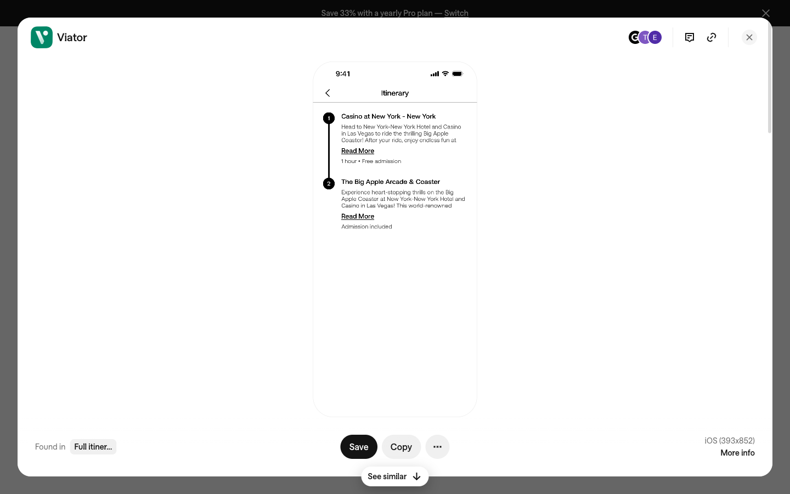
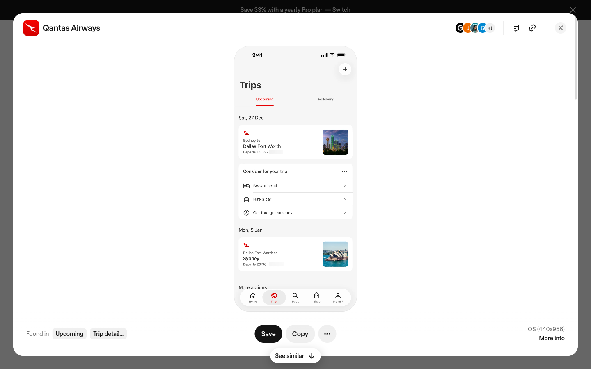
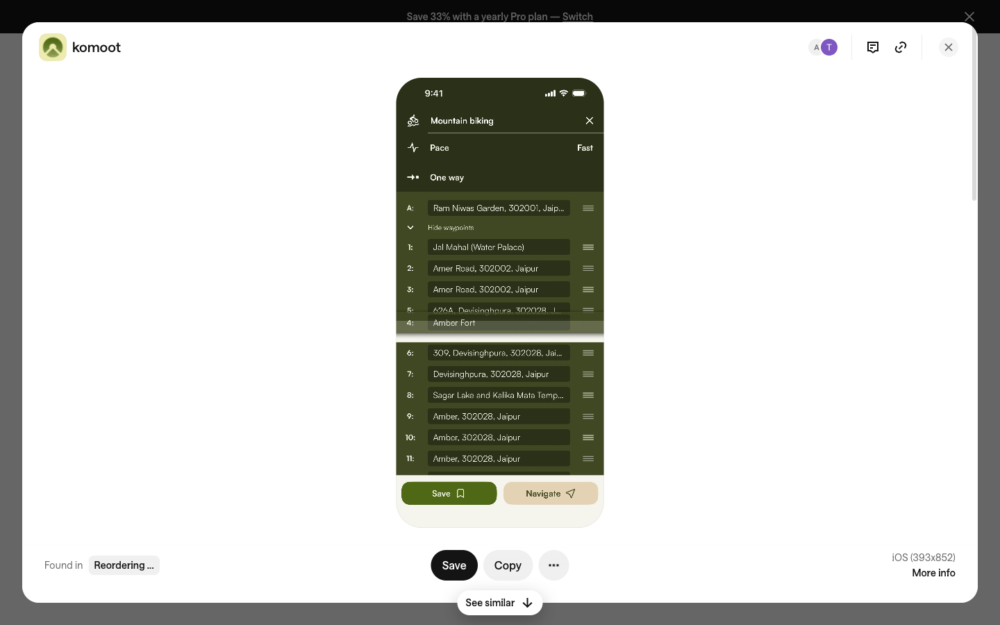

Wayshare is a two-sided travel marketplace where everyday travelers turn their real trips into bookable itineraries and earn commission when others book through them. AI ingests trip artifacts (camera roll, Google Maps timeline, booking confirmations) and reconstructs them into structured day-by-day itineraries in under 20 minutes.
One-line pitch: "The marketplace where your last trip becomes someone else's next trip."
| Metric | Target |
|---|---|
| Published itineraries | 2,000 across top 50 destinations |
| Monthly active travelers | 50,000 by month 12 |
| GBV cumulative | $2M by end of year 1 |
| Avg traveler rating | ≥ 4.3 / 5 |
Age 25–45, travels 2–4x/year. Camera roll full of geotagged photos. Has already recommended the same places to five friends. Motivated by recognition, passive commission, and helping others. Will NOT spend 6+ hours manually building an itinerary. Needs the AI to do the heavy lifting.
Age 22–45, planning a trip 1–6 months out, hit research fatigue. Distrusts generic content, over-values recommendations from people "like them." Has saved 30+ Instagram posts but has no idea how to sequence them. Will pay for execution (bookings) but not for information (itineraries are free to browse).
| Field | Value |
|---|---|
| Primary metric | GBV per monthly active traveler — captures whether marketplace is driving real commerce |
| Secondary metrics | Itinerary view-to-booking conversion rate; repeat booking rate within 12 months |
| Proxy signals | Time on itinerary detail page; CTA click-through from browse to detail; scroll depth on browse page |
| Screen / Feature | Description |
|---|---|
| Marketplace browse page PRIMARY | Grid of itinerary cards with filters (destination, duration, style, budget) |
| Itinerary detail page PRIMARY | Day-by-day view, contributor profile, booking integration, date personalization |
| Booking review screen | Bundled items checklist, opt-in/out per item, total cost, confirm CTA |
| Contributor upload flow | Multi-step: upload artifacts → AI processes → review draft → publish |
| Contributor dashboard | Earnings, per-itinerary stats, payout management |
| Global nav + auth | Header, search, login/signup, mode switching |
| Item | Reason |
|---|---|
| Admin/moderation panel | Internal tool, separate build |
| Mobile native app | Web-first; native follows after web validated |
| Real booking API integration | Design only — booking flow is mocked |
| Social/friends layer | v2 feature per PRD |
| Constraint | Value |
|---|---|
| Framework | Next.js 16 (App Router), React 19, TypeScript strict |
| UI primitives | shadcn/ui + Tailwind CSS v4 + Radix |
| Platform | Responsive web, desktop-first (1440px → 390px mobile) |
| Mode | Light mode only |
| Accessibility | WCAG AA minimum |
| Build gate | npm run check must pass before sign-off |



| Keyword | Pixel Decision | Confirmed By |
|---|---|---|
| Soft | 16–24px card radius, diffuse multi-layer shadows, warm whites — no hard edges | Client Q3 |
| Organic | Warm natural palette (sage, sand, terracotta), imagery-forward layouts, curved elements | Client Q3 |
| Modern | Contemporary humanist sans-serif, generous whitespace, clean type hierarchy | Client Q3 |
| Geometric | Grid-disciplined structure, subtle geometric patterns in backgrounds, precise alignment | Client Q3 |
| Component | Source | Variants | Confirmed States |
|---|---|---|---|
| Itinerary card | Anchor B | Default, hover, booked | Default |
| Journey stop row | Anchor A | Default, active, completed | Default |
| Day group header | Anchor B, C | Collapsed, expanded | Expanded |
| Pill CTA button | Anchor C | Primary filled, secondary outlined | Both |
| Tab bar | Anchor B | Active (underline), inactive | Both |
| Booking item row | Anchor B, C | Checked, unchecked, unavailable | Default |
| Element | Value | Status |
|---|---|---|
| Product name | Wayshare | Locked |
| Tagline | "The marketplace where your last trip becomes someone else's next trip" | Locked |
| trips@wayshare.com | Locked | |
| Logo/wordmark | Not yet designed — Designer Agent to propose | Pending |
| Brand color | No locked color — one per direction, Designer selects | Pending |
Three directions, each rooted in its anchor image. All share: light mode only, desktop-first responsive web, imagery-forward (real trip photos are the content), trust signals prominent.
Ultra-clean white canvas. Numbered black filled circles connected by a thin 1px vertical line form the visual backbone of every itinerary view. No colored backgrounds, no shadows, no decorative elements. Pure typographic hierarchy. The product's authenticity radiates from the raw clarity of structure. Governing principle: editorial severity.
Warm off-white (#F5F5F7) background with white card surfaces creating depth through background contrast alone. Date-and-destination labels ("Apr 12 — Tokyo") act as muted section headers grouping itinerary cards. Warm terracotta accent (#D4622A). Right-aligned destination thumbnails in every card. 12px card radius, subtle diffuse shadow. Governing principle: organized intimacy.
Warm cream (#F8F6F0) background. Sage-green (#4A7C2F) full-width section bars with white text act as day/group dividers within the itinerary view — the entire organizational language comes from the surface color rather than type weight. Dense structured lists, sidebar filter panel, pill CTAs. 8px card radius. Governing principle: grounded naturalism.
| Adjective | Writing Rule | Confirmed By |
|---|---|---|
| Authentic | Write like a friend's recommendation, not a brochure | PRD |
| Conversational | Use "you/your trip" not "the user/traveler" | PRD |
| Specific | Name real places, real durations, real costs — no vague claims | PRD |
| String | Value |
|---|---|
| Product name | Wayshare |
| Contributor CTA | "Turn my trip into an itinerary" |
| Search placeholder | "Where did they go?" |
| Trust badge | "Verified recent trip" |
| Commission line | "Earn commission when others book" |
"Itinerary" not "trip plan" · "Contributor" not "creator" or "host" · "Traveler" not "user" or "customer" · "Booking" not "purchase" · "Commission" not "earnings split"
A traveler must be able to land on the marketplace, find an itinerary matching their destination and duration, and determine within 60 seconds whether it was taken by someone trustworthy and fits their style — without clicking into the detail page.
After entering travel dates, a traveler must see real availability for all bookable items, opt out of anything unwanted, and confirm the full bundle in a single checkout screen.
A contributor must upload trip artifacts, review the AI-generated draft, make edits, and hit publish — with median time under 20 minutes and without requiring writing skills.
Greenfield build. No existing pages, routes, or components. The Next.js 16 + shadcn/ui + Tailwind v4 scaffold is the starting state with no visual identity and no content routes.
| Route | Surface | Priority |
|---|---|---|
src/app/page.tsx | Marketplace browse (homepage, traveler-facing) | Primary |
src/app/itinerary/[id]/page.tsx | Itinerary detail page | Primary |
src/app/book/[id]/page.tsx | Booking review screen | Secondary |
src/app/contribute/page.tsx | Contributor upload flow | Secondary |
src/app/dashboard/page.tsx | Contributor dashboard | Secondary |
No existing pages — all states are Designer Agent decisions. Required states per component:
| Component | Required States |
|---|---|
| Itinerary card | Default, hover (elevation change), saved/bookmarked |
| Filter chip | Active, inactive, hover |
| Search bar | Default, focused, populated |
| Tab | Active (underline + color), inactive |
| Booking item row | Checked, unchecked, unavailable |
| CTA button (primary) | Default, hover, loading, disabled |
| Day section header | Expanded, collapsed |
| Journey stop | Default, active (current), completed |
| Field | Value | Source |
|---|---|---|
| Output format | Three interactive HTML prototypes → client selects one → port to Next.js 16 | Client confirmed |
| Device targets | Desktop (1440px) primary; mobile (390px) responsive | Client Q2 |
| Accessibility | WCAG AA minimum | Default |
| Build target | Next.js 16 + shadcn/ui + Tailwind v4 | Repo scaffold |
| Check gate | npm run check must pass before sign-off | AGENTS.md |